아스팔트 포장의 구성
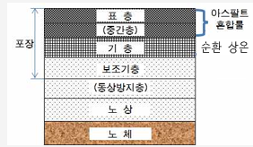
일반가열아스콘 Hot Mix Asphalt
신규 골재와 아스팔트를 가열·혼합하여 생산하는 기본 아스팔트 혼합물입니다. 기층용·중간층용·표층용으로 생산됩니다.
순환가열아스콘 Recycled Hot Mix Asphalt
폐아스콘 순환골재를 가열 재생하여 생산하는 자원순환형 아스팔트 혼합물입니다.
순환상온아스콘
순환 상온 아스팔트 콘크리트
Recycling Cold Asphalt Concrete아스팔트와 골재를 가열하지 않고 상온에서 혼합하여 시공하는 차세대 친환경 아스콘입니다. 폐아스콘 순환골재를 70~80% 사용해 자원을 순환시키면서도, 양생 후에는 가열아스콘과 동등한 성능을 확보합니다.
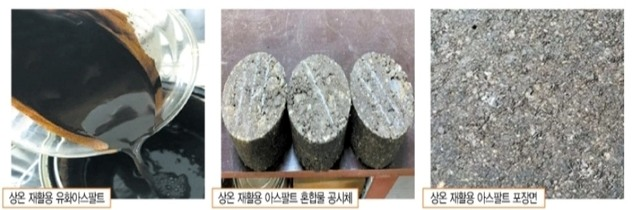
- 연료 가열이 없어 CO2가 발생하지 않는 저탄소 친환경 공법
- 폐아스콘 순환골재(70~80%)를 사용한 자원순환 제품
- 가열아스콘 대비 저렴한 단가 (기층용 제품)
- 의무사용 재활용 제품 해당
- 양생 완료 후 가열아스콘과 동등한 특성
- 조달청 물품식별번호 26124939 등록
| 시험항목 | 기준치 | 측정치 |
|---|---|---|
| 마샬안정도 (40℃, N) | 6,000 이상 | 9,200 |
| 간접인장강도 (25℃, MPa) | 0.40 이상 | 0.67 |
| 인장강도비 (TSR) | 0.70 이상 | 0.79 |
| 흐름값 (1/100cm) | 10 ~ 40 | 29 |
| 공극률 (%) | 4 ~ 14 | 9 |
| 마샬다짐횟수 | 양면 75 | 양면 75 |
순환 상온 아스팔트 혼합물 시험결과 EcoCold · SuperCold 비교
마샬 안정도하중 저항력 평가, 40℃ 30분 수침 후
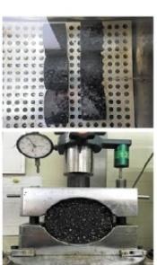
간접인장강도(ITS)균열 저항성 평가, 25℃
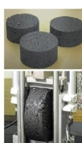
60℃·48hr 양생(국토부 규정) / 25℃·48hr 양생(현장 조건) 각각 측정
인장강도비(TSR)수분 민감성 평가, 25℃ 24hr 수침 후
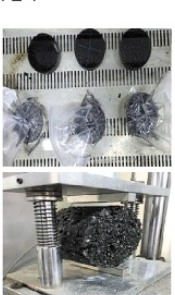
함부르크 휠트래킹소성변형·수분저항성 평가, 50℃ 수침
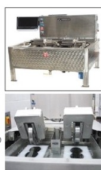
20,000회 통과 시 침하깊이 · 수치가 작을수록 우수
※ 자체 시험 결과이며, 그래프 막대 길이는 근사값입니다.
아스콘 제조 공정
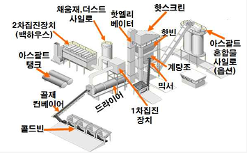
※ 1차·2차 집진장치(백하우스)에서 회수한 채움재(더스트)는 계량 단계에 재투입되고, 아스팔트 탱크에서 가열된 아스팔트는 믹서에 별도 투입됩니다.
순환 상온 아스팔트 혼합물 생산 및 시공
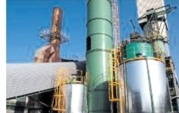
상온 재활용 아스콘
생산 플랜트
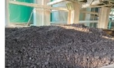
플랜트 생산
상온 재활용 아스콘
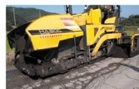
하부층(기층) 포설
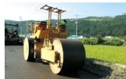
하부층(기층)
포설 후 다짐
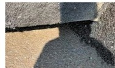
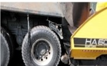
하부층(기층) 시공
직후 표층 포설
인증 및 허가현황
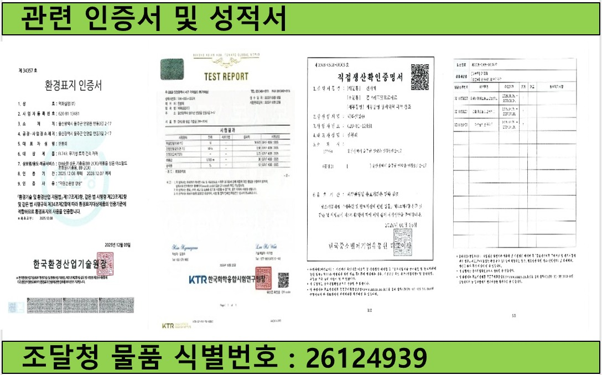
KS F 2349 단체표준
가열아스팔트 혼합물 한국산업규격 표시허가 → 단체표준 전환
환경표지인증 · 순환상온 환경인증
친환경 자원순환 제품으로 환경표지인증서를 획득했습니다.
폐기물 최종재활용업 허가
폐아스콘을 순환골재로 재생·활용하는 최종재활용업 허가를 보유하고 있습니다.
건설폐기물 수집·운반 / 중간처리업 허가
건설폐기물의 수집·운반부터 중간처리까지 허가받은 설비로 처리합니다.